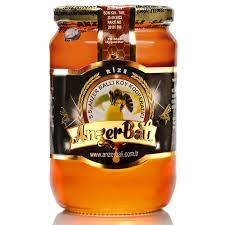
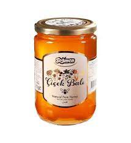
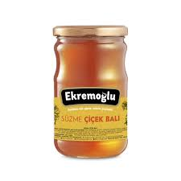
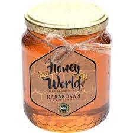

BALABAN
ANASAYFA
URUNLER
HAKKIMIZDA
ILETISIM
KAMPANYALAR
GIRIS YAP
KAYIT OL
ANZER BALI

Anzer balı sadece Rize’nin Yukarı İkizdere köyüne bağlı olan Anzer yaylasında üretilir. Rize'den gonderim saglanir.
Kavanoz Sayisi Giriniz:
179,99Tl
SATIN AL
CICEK BALI

Çiçek balı Türkiye'nin tüm bölgelerinden elde edilebilir. Ulkenin her yerinden gonderim saglanir.
Kavanoz Sayisi Giriniz:
179,99Tl
SATIN AL
SUZME BALI

Diğer ballar gibi çiçek polenlerinden üretilmez. Sarıçamların salgıladıkları bir tür salgı ile üretilir. Ulkenin her yerinden gonderim saglanabilir
Kavanoz Sayisi Giriniz:
179,99Tl
SATIN AL
KARAKOVAN BALI

Karakovan balı,hiçbir şekilde petek eklemesi yapılmadan, sadece işçi arılar arafından örülen petekle yapılan ballara verilen isimdir. Karadenizden gonderim saglanir
Kavanoz Sayisi Giriniz:
179,99Tl
SATIN AL